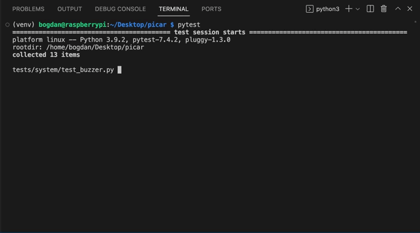
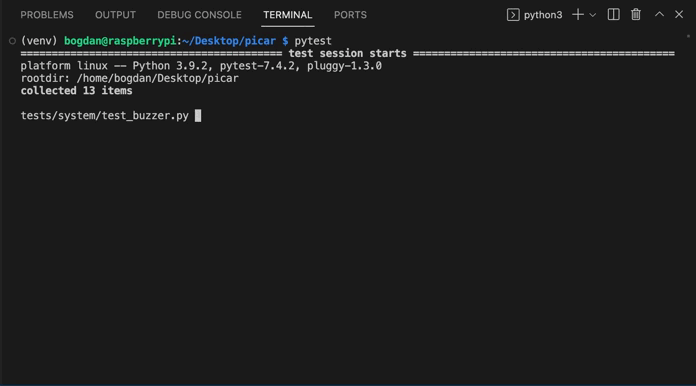

As an engineer, I have worked in natural language and voice processing, but lately, my main focus has been on computer vision. I work
on security systems for road infrastructure and autonomous vehicles.
I obtained my Bachelor's degree in 2020 and completed my Master's degree in 2022 at the National
University of Kyiv-Mohyla Academy. Throughout my academic journey, I had the privilege of working
under the guidance of
Prof. Galyna Kriukova,
Andrii Dmytryshyn, and
Nadiya Shvai.
During my Master's program, I had an internship at Samsung Research, specifically within the Integent Security Lab,
focusing on voice security applications. Additionally, I did an internship at the University of Toronto, where
I worked under the supervision of
Dr. Brokoslaw Laschowski, and
Dr. Alex Mihailidis on video
classification model for exoskeleton control.
As a person, just a nice guy. I like dogs (proud owner of a Beagle, Dachshund, and Toy Terrier), building miniature models, and assembling drones (FPV, ground drones).
My research and machine learning interests primarily include video processing, reinforcement learning, and robotics.
Publications
Sequential Image Classification of Human-Robot Walking Environments using Temporal Neural Networks
IEEE BioRob 2024
State-of-the-art state estimation model on StairNet dataset of the walking environment in robotic prosthetic legs and exoskeletons, focusing on dynamic human-robot walking dynamics rather than static image classification.
Towards Lightweight Transformer Architecture: an Analysis on Semantic Segmentation
ACDSA 2024 — Oral Presentation
Examining modifications to the Transformer model for semantic segmentation, two approaches were explored: skip-attention and pool-unpool attention. Skip-attention improved inference speed by +26.7% for ADE20k and +101.7% for Cityscapes, while pool-unpool attention showed gains of +14.8% for ADE20k and +73.3% for Cityscapes.
StairNet: Visual recognition of stairs for human-robot locomotion
BioMedical Engineering OnLine
Comparison of state estimation models of the walking environment in robotic prosthetic legs and exoskeletons.
Sequential Image Classification of Human-Robot Walking Environments using Temporal Neural Networks
IEEE ICRA 2023 — Computer Vision for Wearable Robotics Workshop
State estimation model of the walking environment in robotic prosthetic legs and exoskeletons, focusing on dynamic human-robot walking dynamics rather than static image classification.

Geometric Properties of Adversarial Images
IEEE DSMP 2020
Linear algebra-based approach to detect adversarial images, addressing the challenge of identifying slight modifications that mislead machine learning models' predictions, and supporting the method with theoretical explanation and numerical experiments.

Selected open-source projects:
-
Tower Defence RL agent
[Code]
An implementation of a classical Tower Defence game, which allows you to play it on your own, and it also includes a gym-like environment for training RL agents.
-
Raspberry Pi car
[Code]
Building a Raspberry Pi car, from putting it together to testing and adding remote control features. 

-
UA-datasets
[Documentation]
[Code]
[Hugging Face Hub]
Collection of datasets for the Ukrainian language. These datasets include text classification, question answering, and token classification tasks. They are neatly organized and provided within a Python package and also accessible on the Hugging Face Hub for easy use and integration into your NLP projects. -
Surviv.io game bot
[Code]
Reinforcement Learning Agent for the Online Multiplayer Battle Royale Game surviv.io.
-
Quora Insincere Questions Classification (Kaggle)
[Code]
NLP competition for insincere questions classification (silver medal, top 2% solution). -
Exploring cross-lingual abilities of Multilingual BERT
[Code]
I studied M-BERT's transfer learning for classification tasks, moving from English to Russian test sets, and compared the results to RuBERT. I also explored M-BERT's transfer learning for Boolean Questions, fine-tuning on English BoolQ and NLI datasets, then validating on a Russian test set and comparing the outcomes to RuBERT.
Let's get in touch!